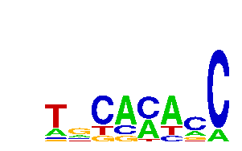

Motif: TGCACACC
length: 8
p-value: stats.binom_test(4,7,0.00363027087406)

Position Weight Matrix
A: 0.21 | 0.21 | 0.00 | 0.64 | 0.43 | 0.64 | 0.21 | 0.14 |
C: 0.07 | 0.14 | 0.64 | 0.21 | 0.50 | 0.14 | 0.57 | 0.86 |
G: 0.07 | 0.50 | 0.14 | 0.14 | 0.00 | 0.00 | 0.14 | 0.00 |
T: 0.64 | 0.14 | 0.21 | 0.00 | 0.07 | 0.21 | 0.07 | 0.00 |
14 instances found
S.octosporus_mad3_SOCG_04060_1093904-1094587
AGCAAACC
_______________________|____________________________________________ + 231 - 453 | 684
S.cryophilus_mad3_SPOG_03220_59185-59814
TATACACC
_______|_______________________________________________________ + 76 - 554 | 630
TCCAAACC
___________________________________|___________________________ + 353 - 277 | 630
DM_mad3_A1Z6I7_5974284-5974983
TGCAAAAC
_______________________|______________________________________________ + 238 - 462 | 700
ATGACAAC
____________________|_________________________________________________ + 203 - 497 | 700
S.japonicus_mad3_SJAG_04699_322485-322853
CTTGCACA
_________________________|__________ + 257 - 112 | 369
Sp_mad3_upstream/SPCC1795.01c/III:996817-997415
TGCATTCC
_____________|_____________________________________________ + 132 - 467 | 599
TGCCAACC
___________________|_______________________________________ + 194 - 405 | 599
TGCCATCC
___________________________________________________________| + 590 - 9 | 599
Hs_mad3_O60566_40160591:40161220_CDS
TGCACTTC
____________________________|__________________________________ + 289 - 341 | 630
TGCACCGC
_________________________________|_____________________________ + 334 - 296 | 630
S.cerevisiae_mad3_YJL013C_411041-411233
TACACAGC
|__________________ + 1 - 192 | 193
AATGCACA
__________|________ + 106 - 87 | 193
GCGCACAC
____________|______ + 124 - 69 | 193
Motif: AGGAGCAC
length: 8
p-value: stats.binom_test(1,7,0.000555247084953)
Position Weight Matrix
A: 0.67 | 0.33 | 0.00 | 0.33 | 0.00 | 0.00 | 1.00 | 0.00 |
C: 0.00 | 0.00 | 0.00 | 0.33 | 0.00 | 1.00 | 0.00 | 1.00 |
G: 0.33 | 0.67 | 1.00 | 0.33 | 1.00 | 0.00 | 0.00 | 0.00 |
T: 0.00 | 0.00 | 0.00 | 0.00 | 0.00 | 0.00 | 0.00 | 0.00 |
3 instances found
S.cryophilus_mad3_SPOG_03220_59185-59814
AGGGGCAC
________________________________________|______________________ + 405 - 225 | 630
S.cerevisiae_mad3_YJL013C_411041-411233
AGGCGCAC
____________|______ + 122 - 71 | 193
Hs_mad3_O60566_40160591:40161220_CDS
GAGAGCAC
________________________________________|______________________ + 400 - 230 | 630
Motif: ATACACAG
length: 8
p-value: stats.binom_test(1,7,0.000284981476204)
Position Weight Matrix
A: 0.50 | 0.50 | 0.50 | 0.50 | 0.50 | 0.50 | 0.50 | 0.50 |
C: 0.00 | 0.00 | 0.00 | 0.50 | 0.50 | 0.50 | 0.50 | 0.00 |
G: 0.00 | 0.00 | 0.00 | 0.00 | 0.00 | 0.00 | 0.00 | 0.50 |
T: 0.50 | 0.50 | 0.50 | 0.00 | 0.00 | 0.00 | 0.00 | 0.00 |
2 instances found
Sp_mad3_upstream/SPCC1795.01c/III:996817-997415
TATACACA
________________________|__________________________________ + 247 - 352 | 599
S.cerevisiae_mad3_YJL013C_411041-411233
ATACACAG
|__________________ + 0 - 193 | 193